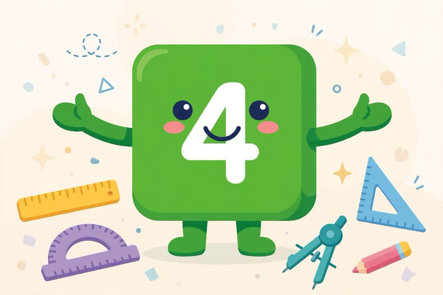
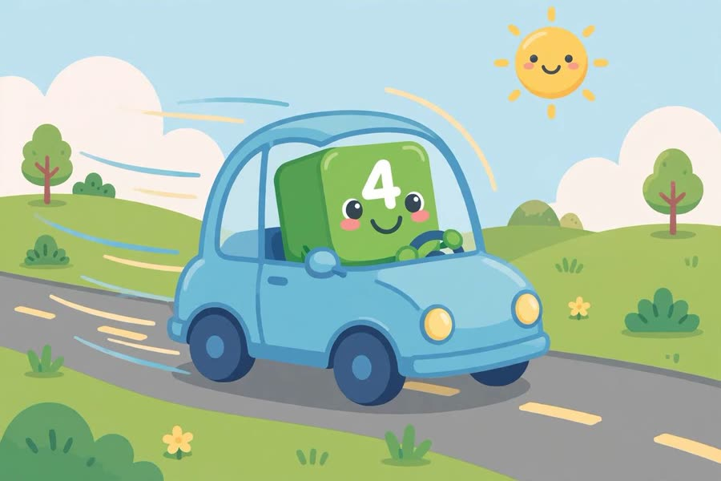

📖 剧情简介
四号登场！他是方方正正的正方形：四条边、四个角！
Four arrives! He's a square through and through: four sides, four corners!
🎭 角色
四号 Four
（数字乐园，四号迈着方步出场 / Numberland, Four marches in squarely）
4
Four四号
Hello! I'm Four!
你好！我是四号！
4
Four四号
I have four blocks! One, two, three, four!
我有四个方块！一、二、三、四！
4
Four四号
Look at me — I'm a square!
看我——我是正方形！

Look at me — I'm a square!
4
Four四号
Four sides, four corners!
四条边，四个角！
（四号摆成正方形 / Four arranges into a square）
4
Four四号
Two by two makes a square!
二乘二就是正方形！
4
Four四号
🎵 Four, four, square-tastic Four!
🎵 四，四，正方形之四！
4
Four四号
🎵 Count my sides: one, two, three, four!
🎵 数我的边：一、二、三、四！
4
Four四号
Four wheels on a car go round and round!
汽车有四个轮子转圈圈！

Four wheels on a car go round and round!
4
Four四号
Four legs on a table, steady and strong!
桌子有四条腿，又稳又壮！
4
Four四号
Square power!
正方形力量！